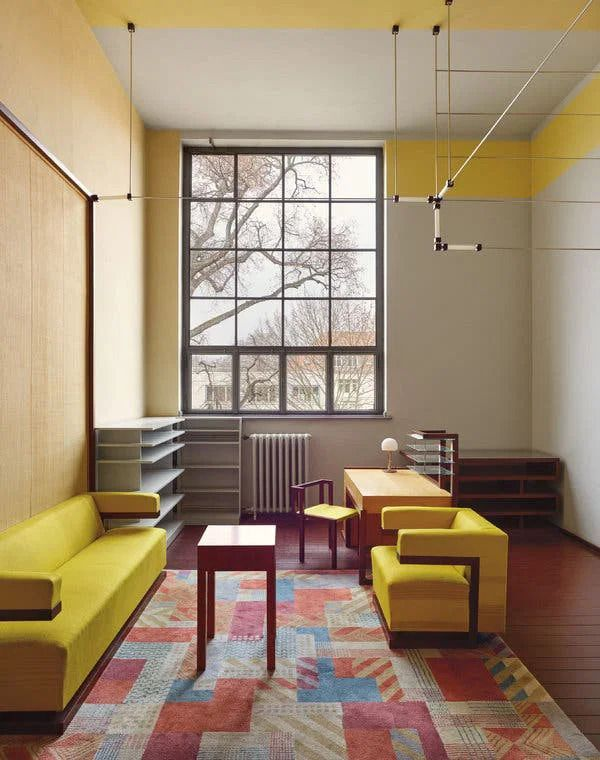
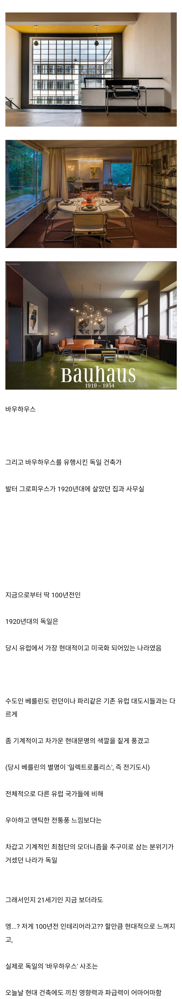

그건 80년전
유대인하우스 ㄷㄷ
존오브인터레스트 ㅇㄷ?
오 이거 안봤는데 재밌어보이네
쉰들러리스트 인생은 아름다워 이런거 봤으면 잼슴
기생충 더한 느낌
연합국놈들이 문화유산을 다 박살냈나?
100년 전이면 연합군이 폭격하기 전임 ... 그냥 저런 풍조가 유행한것
ㄴㄴ 히틀러가 퇴폐, 빨갱이 예술이라고 다 때려잡음
그래서 바우하우스 후계자가 미국인 이유가 바로 저 탄압으로 도망간 사람들이 미국에 정착해서 그럼
바우하우스 출신사람들이 전쟁때매 미국으로 건너가서 거기서 교수해서 이어져내려온거라고봐야하지않나.....
미드에 나오는 사이코패스에 키큰 백인 남자가 살 것 같은 디자인이네
바우하우스 시계들도 이쁨
정한수 이쁘지
탕겐테 진짜 이쁘지
철제프레임이랑 우드가 진짜 잘어울리지 철의 차가움을 나무가 잡아주고 나무는 여러 색도 잘받으니까 적당히 컬러풀해도 구성이 유지됨
근데 결국 근래에 미드센츄리가 다시 유행하니까 바우하우스 디자인도 현대적이라 하는거지 한 1-20년 뒤에 엔틱이나 Y2K 테크가 유행하면 촌스럽고 개구리다 하지 않을까 ㅋㅋ
요 몇년동안 인테리어 좀 신경쓴다 싶은 집은 다 미드센추리 수납장 놓던데
바우하우스 하면 융한스랑 노모스밖에 모르는 나
묘하게 전에 봤던 몬드리안 스튜디오도 떠올랐음......
https://www.fmkorea.com/887126393
“형태는 기능을 따른다”
기능주의를 칭하는것 같지만 사실상 합리주의임
찐찐 기능주의는 몇개 없음
가스실 ㅇㄷ?